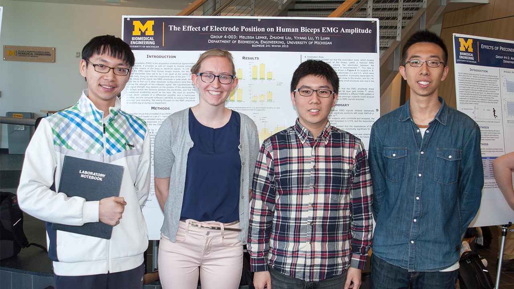
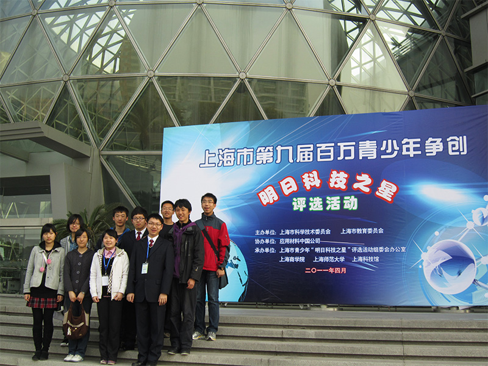

- Aug. 18, 2022
- Engineer a fast, sensitive, bright and photostable genetically encoded voltage indicator called JEDI-2P that is compatible with two-photon microscopy. JEDI-2P enables deep-tissue optical recording of rapid voltage dynamics over tens of minutes.

- Oct. 23, 2020
- A versatile high-throughput technique called SPOTlight to isolate individual yeast or human cells with unique spatiotemporal profiles from heterogeneous populations. This technique allows engineer of a bright and new yellow fluorescent protein mGold.
Patents:
- Methods and compositions for retrieving cellular structures based on spatiotemporal profiles (US20230031708A1, Active)
- Photostable fluorescent proteins (US20230203110A1, Applied)
- Qinyue He, Zhuohe Liu, Shiyi Qian, Zhentao Xu, Shupeng Wei
- May 2016 - Aug. 2016
- Sponsored by Huawei Technologies Co. Ltd.
- Developed an Android application that ran on a Huawei P9.
- Built a bluetooth robot car and a test site to benchmark the performance of SLAM using the application.
- Awarded the best of the five groups from that year by Huawei, and the Sliver Award in UM-SJTU JI 2016 Summer Design EXPO.
Java


- Changqi Dai, Adena Leibbrand, Zhuohe Liu, Jordan Sykes, Tsz Kwan Yim
- Jan. 2016 - Apr. 2016
- Developed an add-on single-use mechanical gauge to indicate internal force of the catheter and prevent its breakage.
- Overhaul using Bootstrap framework in Dec. 2023.


- Suseendrakumar Duraivel, Joseph Letner, Zhuohe Liu
- Apr. 2016
- Built a multi-compartment neuron model in MATLAB that simulate NpHR's influence on action potential propogation.
- Explored the inhibitory effect of NpHR upon changing of light intensity, stimulation position and size, etc.
- Examined briefly the possibility of on-demand close-loop nerve block with electrical signal input and light inihibition output.
Final Presentation Slides (pdf, 1.61 MB)
MATLAB
- Zachary P. French, Zhuohe Liu, Danika J. Rodrigues, Walker L. Thompson
- Dec. 2015
- Built a LabVIEW system capable of controlling the mouse cursor and selecting words/letters using only 3 channels of facial EMG signals, intended for people with speech and/or dexterity difficulties.
LabVIEW
- Melissa Lemke, Zhuohe Liu, Yiyang Lu, Yi Luan
- Apr. 2015
- Reassessed and cast doubt on the necessity of using the assigned electrode position to yield best signal.



- Mentors: Lan Ding[1], Huanxin Xu[2]
- Dec. 2010 - Mar. 2011
- Synthesized naturally occurring red pigment physalien from zeaxanthin and palmitic acid, replacing costly wolfberry extraction method, and to be used as an edible coloring and a nutritional supplement.
- Awarded the First Prize in The 26th Intel Shanghai Adolescents Science & Technology Innovation Fair.
- Honored Shanghai Future Science Star (1 of 10 awardees)





- June 2012